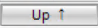
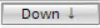

通用输入设备属性

Properties
列出的属性显示在Hardware and network editor > Inspector window > Properties当在选项卡中选择 DALI-2 通用输入设备时Device view选项卡。
General
属性文本 | 描述 | 默认值 |
|---|---|---|
模板 | Template定义使用哪个模板。该模板存储名称、值和使用的信息。
|
|
姓名 | Name是一个用于输入设备名称的文本字段。该名称显示在设备视图中。 | 取决于所选设备。 |
评论 | Comment是一个文本字段，用于输入设备上的任何有用信息。 | 取决于所选设备。 |
简称 | Short designation显示设备的简短描述。只读。 | 取决于所选设备。 |
订单号 | Order number是用于输入订单号的文本字段。 | 所选设备的设备类型。 |
版本 | Version显示设备的内部版本。只读。 | V2.0 |
描述 | Description显示设备的简短描述。只读。 | 取决于所选设备。 |
 可用模板列表
可用模板列表Device
属性文本 | 描述 | 默认值 |
|---|---|---|
短地址 | Short address显示用于与一台设备进行点对点通信的地址。只读。 短地址应用于安装工具中。 范围： -1：未配置 | -1 |
团体地址 | Group address定义 DALI 组号。 具有相同 DALI 组编号的设备由相同的照明输出对象 (LgtAOut) 控制。 范围： -1：设备不属于 DALI 组。 0…15：组地址 Note：此属性不适用于 DALI-2 设备。 | -1 |
序列号 | Serial number显示设备的序列号。只读。 序列号是在安装和调试期间分配的。 | - |
 0...63
0...63Alarming
财产 | 描述 | 默认值 |
|---|---|---|
令人震惊 |
|
|
 ：报警已禁用。
：报警已禁用。 ：报警已启用。创建事件注册 (EE) 对象。
：报警已启用。创建事件注册 (EE) 对象。Functions
Functions 中的 Functions/Chanel 表提供了 32 个实例，可以根据 DALI-2 设备的传感器类型进行配置。将 DALI-2 导轨用于 DALI-2 通用输入设备。
财产 | 描述 | 默认值 |
|---|---|---|
姓名 | Name例如。实例名称还指示实例的数量。只读。 | - |
类型 | Type选择传感器类型。
| OS：占用传感器 |
激活 | Activate定义传感器是否在特定情况下被激活。
|
|
向上移动 |  ：所选传感器向上移动。 | - |
下移 |  ：所选传感器向下移动。 | - |
Presence detector
函数中的存在检测器表存在于所有具有激活的存在检测器的 DALI-2 实例。为所有激活的实例设置以下属性。
财产 | 描述 | 默认值 |
|---|---|---|
中立区计时器 | Neutral zone timer定义存在检测器可以检测到的每个输入事件之间的最短等待时间。 | 1500 |
报告定时器 | Report timer定义输入值不变时的心跳更新间隔。 | 30 |
接收超时 | Reception timeout当存在检测器（占用传感器）与设备通信时，监督常规事件消息的接收。 | 0 |
Brightness sensor
函数中的亮度传感器表存在于所有具有激活的亮度传感器的 DALI-2 实例中。为所有实例设置以下属性。
财产 | 描述 | 默认值 |
|---|---|---|
迟滞 | Hysteresis根据周围的亮度水平定义发光设备的打开和关闭功能。 | 5 |
最小迟滞 | Hysteresismin避免低照度下发生不必要的事件。 |
|
中立区计时器 | Neutral zone timer定义亮度传感器检测到的每个输入事件之间的最短等待时间。 | 1500 |
报告定时器 | Report timer定义输入值不变时的心跳更新间隔。 | 30 |
接收超时 | Reception timeout当亮度传感器与设备通信时，监督常规事件消息的接收。 | 0 |